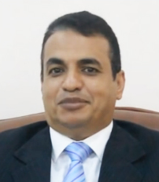

Brief History
On the 7th of January 1995, the Supreme Council of Universities approved the establishment of the Faculty
of
Computers and Information and adopted its bylaws after the Council of Helwan University approved its
establishment on the 18th of July 1994.
Degree No. 419 of 1995 was issued by the President of the Republic Arab of Egypt to establish the faculty
to
actively contribute to the service of the new society. We provide a wide range of opportunities in the
field
of computer and information to contribute to the state of the art technology that enables our country to
enter the era of information and knowledge.
Dean's Message
On behalf of the faculty family, I am pleased to welcome new students who have been fortunate enough
to
join
the Faculty of Computers and Information in the software engineering program.
As the college is one of the new colleges at the level of the Egyptian universities that keep pace
with
the
age of information technology, I am confident that the college students will find everything they
wish
to
build the information mentality that keep pace with modern technology.
As the software engineering program of the new distinctive programs, the Faculty of Computer and
Information
Helwan University is the only college in Egypt, which has this program, which is characterized as a
program
known worldwide and is a scientific addition to the students of the College.
Our students will also enjoy the utmost care in all the cultural, social and sports activities in
addition to
the University's student services such as university housing, restaurants, playgrounds and more.
Prof. Osama Emam
Dean of the Faculty

Our Vision
The Faculty of Computers and Information at Helwan University seeks to excel in scientific, practical and
research in the field of computers and information locally and regionally.
Our Mission
The faculty is working on preparing a distinguished graduate capable of competing in the local and
regional
labor market in the fields of computers and information, while contributing to serving the local
community
and enriching scientific research.